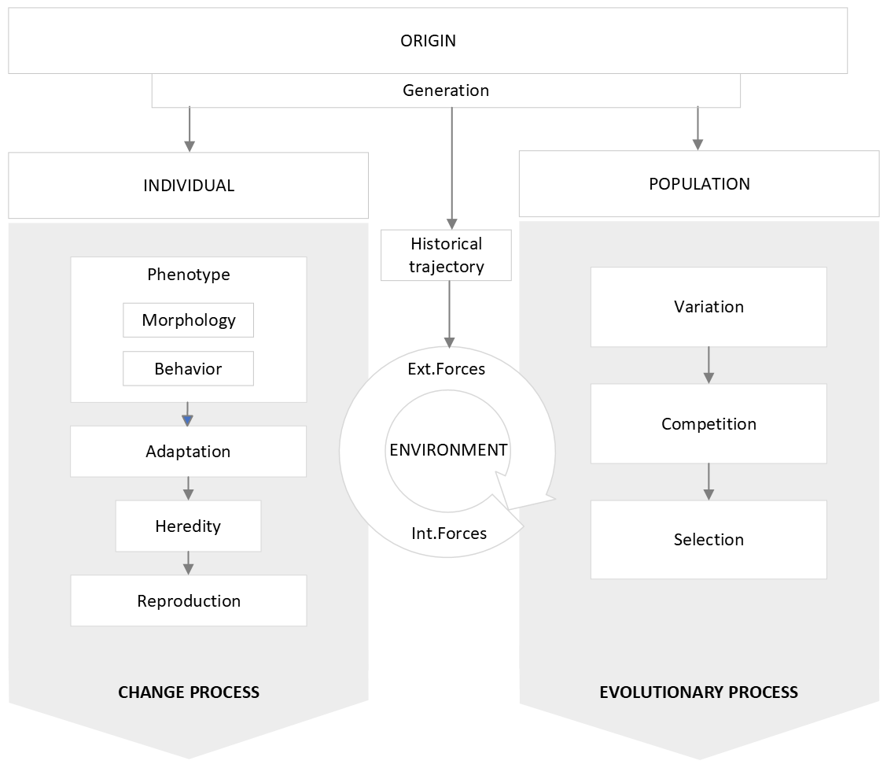

4 Results
4.1 Bowler’s seminal work
Peter J. Bowler’s seminal book, “Evolution: The History of an Idea” (2003) explores the historical evolution of evolutionary thought, offering a comprehensive foundation for understanding the development of economic systems. Bowler’s interdisciplinary perspective highlights the dynamic nature of economic processes, portraying them as evolving systems that change over time. Through his analysis, Bowler provides valuable insights that can enhance research in evolutionary economics by illuminating the historical roots of evolutionary ideas and their relevance to economic analysis.
One key aspect of Bowler’s work relevant to our research question is its examination of the interplay between cultural, scientific, and anthropological factors in shaping evolutionary theories. Bowler traces the evolution of evolutionary thought from its origins in ancient Greece to its modern understanding, highlighting how societal beliefs and values influenced the development of evolutionary concepts.
This is especially valuable because evolutionary economists recognize the importance of understanding the cultural and ideological contexts in which economic systems emerge and evolve.
This is particularly valuable, since for evolutionary economists, understanding the cultural and ideological contexts in which economic systems emerge and evolve is essential.
Another significant contribution of Bowler’s book to our main research objectives is its exploration of the contributions of key figures to evolutionary thought. Bowler examines the ideas and theories of prominent thinkers such as Charles Darwin, Alfred Russel Wallace, and Jean-Baptiste Lamarck, elucidating their influence on the development of evolutionary theory. By understanding the intellectual lineage of evolutionary thought, researchers in evolutionary economics can gain insights into the historical roots of contemporary economic theories and methodologies. Moreover, Bowler’s analysis highlights the diversity of perspectives within evolutionary thought, providing researchers with a rich tapestry of ideas to draw upon in their analyses of economic systems.
Bowler’s book also delves into the controversies and debates surrounding the concept of evolution, shedding light on the varying interpretations and contestations of evolutionary theory throughout history. This aspect of the book is particularly relevant to researchers in evolutionary economics, as it underscores the complex and multifaceted nature of economic evolution. By examining historical debates over evolutionary theory, the author gained a deeper appreciation for the contested nature of economic processes and the diverse array of factors that shape them. Bowler’s nuanced analysis encouraged the author to critically engage with evolutionary concepts and methodologies, fostering a more robust and interdisciplinary approach to studying economic systems.
In conclusion, Peter J. Bowler’s “Evolution: The History of an Idea” was a valuable resource for the author to construct the preliminary evolutionary framework. By drawing upon Bowler’s insights, the author was able to understand the conceptual foundations of evolution in natural science, the interrelations between those concepts and the patterns that have arisen along the history of this idea, thereby advancing interdisciplinary thought at the intersection of economics and evolutionary biology.
Overall, while Peter J. Bowler’s “Evolution: The History of an Idea” primarily focuses on the historical development of evolutionary thought, it also offers valuable insights into modern aspects of evolution, including its interdisciplinary nature, its application to understanding human behavior and psychology, its incorporation of cultural evolution, and its relevance to fields such as evolutionary economics. By examining the evolution of ideas about evolution, Bowler’s work provides a foundation for understanding the complexities of evolutionary processes in the modern world.
4.2 Preliminary framework
Bowler’s historical perspective of evolution in natural science provides a robust foundation for delineating themes and aggregate dimensions against which to code the data extracted from the literature on evolutionary economics and theory of the firm literature are coded (see Figure X). Each theme encapsulates essential aspects of evolutionary theory, shedding light on the intricate mechanisms governing species evolution and behavior. The apriori themes that reflect the conceptual framework on evolution derived from the analysis of Bowler’s narrative are the following:

4.2.1 Unit of analysis
The unit of analysis serves as the fundamental entity upon which observations and analyses are centered. The “individual organism” stands as a cornerstone in evolutionary studies, representing a single, discrete entity within a given population. In the context of biology, an individual organism refers to a single living being, such as a plant, animal, or microorganism, capable of independent existence and reproduction. Notwithstanding, distinguishing between the individual organism and the population as units of analysis is crucial in evolutionary studies. While the individual organism represents a single instance of life, the population comprises a group of organisms of the same species occupying a defined geographical area and sharing genetic similarities. The individual organism serves as the building block of the population, with its traits, behaviors, and adaptations contributing to the collective dynamics of the population. For example, Darwin’s theory is a mix of both: natural selection operates at the level of the individual organism, regulating the frequencies of traits within a population over time.
The unit of analysis impacts the scope and focus of any evolutionary approach. Analyzing individual organisms allows researchers to examine specific traits, behaviors, and adaptations within a single entity, providing insights into microevolutionary processes such as natural selection and genetic drift. Conversely, studying populations enables researchers to investigate macroevolutionary patterns and trends, such as speciation and diversification, by considering the collective dynamics and genetic variability within and between populations.Therefore, while the individual organism offers granularity in understanding the mechanisms of evolutionary change at a local level, the population provides a broader perspective on the dynamics of species evolution and adaptation over time. Both units of analysis are integral to comprehensively elucidating the complexities of evolution within natural systems, highlighting the interplay between individual-level characteristics and population-level dynamics in shaping the evolutionary trajectory of species.
4.2.2 Origin
The emergence of individuals within a population profoundly influences the evolutionary process by introducing novel genetic variation, subject to selection, mutation, and other evolutionary and change drivers. Consequently, the inquiry into the origin of individuals holds paramount importance in evolutionary analysis as it addresses fundamental inquiries regarding the emergence, diversification, and perpetuation of life forms on Earth. Furthermore, understanding the mechanisms governing the origination and divergence of new species from common ancestors is crucial for comprehending the intricate dynamics driving biodiversity, species distribution, and abundance across diverse ecosystems. Such insights illuminate the adaptive strategies, evolutionary pressures, and ecological interactions shaping species dynamics within and among ecosystems.
The concept of “origin” is intimately intertwined with “generation,” both being deeply interconnected and mutually influential in understanding the dynamics of evolutionary change. While the former focuses on the emergence of new species or lineages, marking the beginning of their evolutionary trajectory and setting the stage for evolutionary change within populations, the latter plays a crucial role in shaping the genetic diversity within populations. These genetic variations undergo selection, mutation, and other evolutionary forces, ultimately influencing the emergence of new traits and adaptations.
4.2.3 Evolutionary process
The evolutionary process unfolds at the population level, encompassing the collective dynamics and interactions among individual organisms within a specific group. Unlike focusing solely on individual organisms, examining evolution at the population level provides insights into broader patterns of genetic variation, adaptation, and speciation within and between populations. At the heart of population-level analysis lies the concept of gene flow, wherein genetic material is exchanged between individuals within a population and sometimes between populations. Gene flow facilitates the spread of advantageous traits and genetic diversity, enabling populations to adapt to changing environmental conditions over time. Conversely, isolation mechanisms, such as geographic barriers or reproductive barriers, can restrict gene flow between populations, leading to genetic differentiation and potentially the emergence of new species through speciation. Natural selection acts upon this variation, favoring traits that enhance survival and reproductive success in a given environment. Other forces like genetic drift and mutation further contribute to population dynamics. Understanding these processes allows exploration of broader evolutionary patterns, such as speciation and adaptation, by considering the collective dynamics of populations.
4.2.4 Change process
At the core of evolutionary dynamics lies the change process occurring at the level of individual units. In natural systems, this manifests as the continual adaptation and modification of organisms in response to environmental pressures and internal dynamics. These changes may include phenotypic modifications, behavioral adjustments, or genetic mutations, all of which contribute to the overall diversity and resilience of the population. Natural selection acts as a guiding force, favoring traits that confer a reproductive advantage or enhance survival in a given environment. Genetic mutations introduce novel genetic variation into populations, providing raw material for evolutionary change. Understanding the change process at the unit level is essential for elucidating the mechanisms driving species evolution and adaptation. By examining the interactions between individual units and their environment, insights into the evolutionary dynamics shaping biodiversity, ecosystem resilience, and species persistence over time are gained.
4.2.5 Environment
The environment plays a critical role in shaping evolutionary processes, providing the context within which populations and individuals interact and evolve. In natural systems, the environment encompasses both biotic and abiotic factors, influencing species distribution, behavior, and evolution. Biotic factors include living organisms and their interactions, such as competition for resources, predation, and symbiotic relationships. Abiotic factors comprise non-living elements like climate, geography, and physical resources. Together, these factors create dynamic ecosystems where species must adapt to survive and reproduce. Furthermore, environmental conditions determine the fitness of organisms, driving natural selection and shaping evolutionary trajectories. Species evolve traits and behaviors suited to their environmental niche, optimizing survival and reproductive success. Understanding the operational environment is crucial for comprehending the dynamics of natural systems and the mechanisms driving evolutionary change. By analyzing how organisms interact with and respond to their environment, insights into the processes shaping biodiversity, ecosystem function, and species evolution can be gained.
The operational environment is also heavily influenced by historical factors. Past events, such as environmental disturbances and climatic shifts, leave lasting impacts on ecosystems, affecting species composition, habitat availability, and biodiversity patterns. Ecosystems with long histories may exhibit greater biodiversity and genetic resilience, while disturbances can create legacies that constrain adaptation. Integrating historical analysis into evolutionary analysis can provide valuable insights into path-dependent processes, informing conservation strategies for promoting ecosystem resilience and adaptation to changing environmental conditions.
4.2.6 Phenotypic traits
The structural and behavioral traits of individual organisms are fundamental components of evolutionary dynamics within natural systems. Structural traits encompass physical characteristics such as morphology, anatomy, and physiology, which determine an organism’s form and function. These traits play a crucial role in the adaptation of organisms to their environment and their interactions with other species. Behavioral traits, on the other hand, encompass the actions and responses exhibited by organisms in their environment. These traits include feeding behaviors, mating rituals, communication signals, and social interactions, among others. Behavioral adaptations enable organisms to acquire resources, avoid predators, compete for mates, and establish social hierarchies, all of which contribute to their survival and reproductive success. The interplay between structural and behavioral traits shapes the ecological niche occupied by organisms and determines their fitness within a given environment. Organisms with traits that confer advantages in resource acquisition, predator avoidance, and reproductive success are more likely to survive and pass on their genes to future generations. Over time, this leads to the evolution of traits that are well-adapted to the prevailing environmental conditions. By examining the morphological, physiological, and behavioral adaptations of organisms, valuable insights can be gained into the ecological strategies employed by species, the dynamics of ecological communities, and the co-evolutionary processes that shape biodiversity over time.
4.2.7 Adaptation
Adaptation is a fundamental mechanism driving evolutionary change at the individual level within natural systems. Organisms continuously adjust their traits, behaviors, and physiological processes in response to selective pressures exerted by the environment. At its core, adaptation enables organisms to enhance their fitness and survival in specific ecological niches. Through the process of natural selection, individuals with traits that confer a reproductive advantage or improve survival under prevailing environmental conditions are more likely to pass on their genes to future generations. Over time, this leads to the accumulation of adaptive traits within populations, increasing their overall fitness and resilience to environmental challenges. Adaptation occurs through various mechanisms, including phenotypic plasticity, genetic mutations, and behavioral adjustments. Phenotypic plasticity allows traits to adjust to environmental cues, while mutations introduce genetic variation. Behavioral adaptations optimize resource use, predator avoidance, and reproduction. Understanding adaptation at the individual level is crucial for uncovering the mechanisms driving evolutionary change and species diversification within natural systems, shedding light on species’ adaptive strategies, the emergence of novel traits, and the dynamics of ecological interactions over time.
4.2.8 Reproduction
Reproduction is a fundamental process driving evolutionary dynamics at the individual level. Organisms perpetuate their genetic lineage through the production of offspring, passing on their hereditary traits to future generations. Reproduction ensures the continuity of life and the preservation of genetic diversity within populations. Through sexual and asexual reproduction, organisms produce offspring with genetic variations that contribute to the overall genetic pool of the population. The reproductive process is influenced by various factors, including mate choice, mating behaviors, reproductive timing, and reproductive success. These factors shape patterns of mate selection, mating strategies, and reproductive outcomes within populations, influencing the genetic composition and evolutionary trajectory of species. Examining the reproductive process at the individual level is key for elucidating the mechanisms underlying evolutionary change and population dynamics within natural systems. Such analysis provides valuable insights into the adaptive strategies employed by species, the preservation of genetic diversity, and the evolutionary forces influencing populations over time.
4.2.9 Heredity
Heredity is intricately linked to reproduction as it governs the transmission of genetic information from parent to offspring. This connection is vital because heredity, through the transmission of DNA, ensures the continuity of genetic traits across generations, providing the raw material for evolutionary change. Furthermore, genetic variation resulting from mutations and recombination during reproduction introduces diversity within populations, fueling the process of natural selection and facilitating adaptation to changing environmental conditions. Thus, understanding the relationship between heredity and reproduction is crucial for unraveling the mechanisms that underpin individual change processes and their broader implications for evolutionary dynamics within natural systems.
4.2.10 Competition
Competition constitutes a fundamental force driving evolutionary dynamics within natural systems. Competition occurs when individuals or species vie for limited resources such as food, water, or territory. This competitive pressure selects for traits that confer a competitive advantage, driving evolutionary change over time. Within populations, competition may take various forms, including direct competition for resources, interference competition through aggressive interactions, or exploitative competition where one species outcompetes another for resources. These competitive interactions can lead to niche differentiation, where species partition resources to reduce competition and coexist within the same habitat. Moreover, competition can drive evolutionary innovation and adaptation as species evolve traits and behaviors to outcompete rivals. This race dynamic can lead to the diversification of species and the development of complex ecological interactions over evolutionary time scales. Understanding the dynamics of competition is essential for elucidating the mechanisms driving species interactions, community dynamics, and evolutionary trajectories within natural ecosystems. By studying competitive interactions and their outcomes, insights into the processes shaping biodiversity, ecological resilience, and ecosystem stability are gained.
The connection between competition and selection lies in the fact that competition sets the stage for natural selection to act. When individuals compete for resources, those with traits that confer a competitive advantage are more likely to survive and reproduce, passing on their advantageous traits to their offspring. Over time, this process leads to the accumulation of adaptive traits within populations, as individuals with less advantageous traits are outcompeted and their genes are less likely to be passed on. In summary, competition provides the selective pressures that drive natural selection, while natural selection favors traits that enhance competitive ability, thus influencing the outcome of future competition. Therefore, while competition precedes selection in terms of the environmental pressures exerted on individuals, the process of selection ultimately feeds back into competition by shaping the traits and behaviors of individuals within populations.
4.2.11 Selection
Selection mechanisms act upon the diversity of individual units, favoring traits conducive to competitive advantage and survival. As such selection processes play a pivotal role in driving evolutionary change. Natural selection acts as a mechanism for favoring traits that enhance an organism’s fitness and reproductive success in a given environment. Through natural selection, individuals with advantageous traits are more likely to survive and reproduce, passing on their genetic material to subsequent generations. Over time, this differential reproductive success leads to the accumulation of beneficial traits within populations, driving evolutionary adaptation to changing environmental conditions. It should be noted that while natural selection stands as a cornerstone of evolutionary theory, selection operates through various mechanisms, including directional selection, stabilizing selection, and disruptive selection. Directional selection shifts traits towards one extreme, stabilizing selection maintains the status quo within a population, and disruptive selection leads to divergence. Understanding selection processes is crucial for elucidating the mechanisms driving evolutionary change and biodiversity within natural systems. By studying the interactions between organisms and their environment, insights into the adaptive strategies employed by species, the emergence of novel traits, and the evolution of complex ecological interactions are gained.
Natural selection primarily operates at the individual level within populations. It acts on the variation in heritable traits among individuals, favoring those with traits that enhance their survival and reproductive success in a given environment. Over time, differential reproductive success leads to the accumulation of advantageous traits in populations, driving evolutionary change. While natural selection occurs at the individual level, its effects can be observed at the population level through changes in allele frequencies and the distribution of traits within populations.
4.3 Quantity and quality of included studies
Seventy-five studies of evolution were identified as meeting the criteria above and form the basis of this review. Table 1 provides definitions of the six SEARCH pathways and lists the sub-categories of studies that were identified in each pathway for the current review. As well as research papers and books on evolutionary economics, we found discussion papers about differing priorities, conceptual frameworks, community equipoise, power, democratic practice and advocacy. These papers drew on a wide range of theories, and described episodes of involvement in many different research areas. (…)The health topics covered in the literature included different health conditions (asthma, breastfeeding (…) The papers came from different disciplines (agriculture, genetics, environmental studies) and reported different research methodologies (systematic reviews, technology assessment, participatory research). Oliver et al. (2008)*
4.4 Usefulness of the preliminary conceptual framework
The preliminary framework synthesized from Bowler’s historical perspective provides a comprehensive lens for understanding the evolutionary dynamics inherent in economic systems and firm behavior. These themes serve as foundational pillars for subsequent analyses, facilitating deeper insights into the mechanisms driving economic evolution and organizational dynamics. By elucidating the interplay between evolutionary principles and economic phenomena, this framework lays the groundwork for advancing our understanding of the evolutionary economics and the theory of the firm.